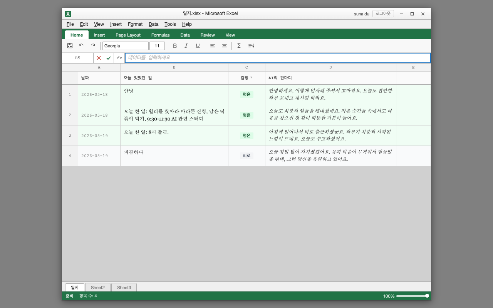
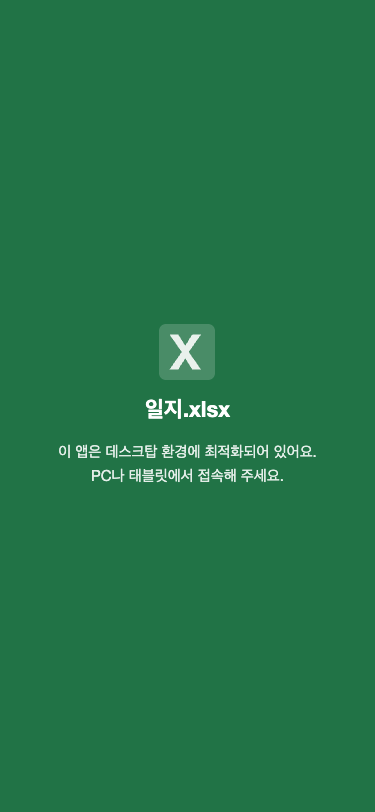
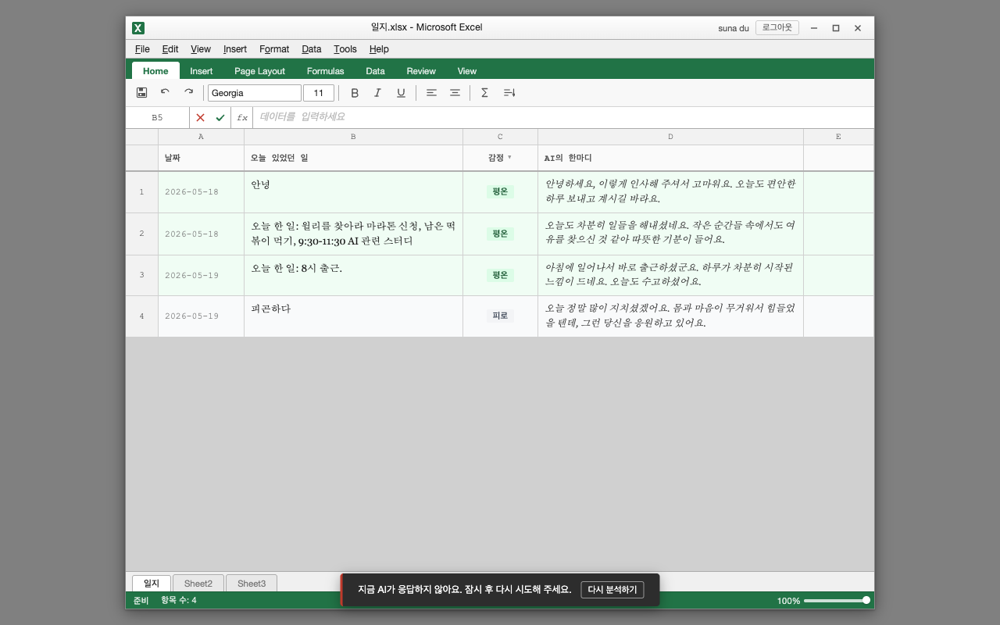

"로그 파이프라인을 완성하고, 앱의 핵심 사용성 결함을 해소하여
첫 외부 공유가 가능한 상태로 만든다."
x-request-id JSON body 연결 — 서버-클라이언트 요청 추적 가능index.html 분리 영역 사전 분석


하단 토스트: 실패 메시지 + 재시도 버튼. Firestore 저장 실패 시에도 동일 패턴 적용.
| # | 결정 내용 | 결과 |
|---|---|---|
| 1 | /api/log Vercel Firewall rate limit — IP당 분당 30회 | 완료 |
| 2 | Firebase Analytics measurementId 연결 | 완료 |
| 3 | x-request-id를 JSON body에 포함 (헤더 대신) | 완료 |
| 4 | GA4 데이터 보존 기간 2개월 (개인 데이터 최소 보관) | 완료 |
| 5 | 모바일 최소 대응 — 그리드는 가로 스크롤 허용 | 완료 |
| 6 | 동의 UX 배너 — 해외 출시 결정 시 즉시 추가 | 스프린트 5 이관 |
| 7 | index.html 분리 — 빌드 환경 도입 결정 후 진행 | 스프린트 5 이관 |